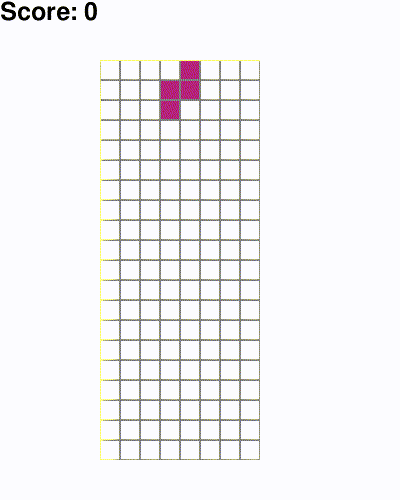

Reinforcement Learning with DQN (WIP)
|  |
I implemented the Deep Q Learning algorithm proposed by Google DeepMind based on their paper. The code is available on GitHub. For evaluation I used OpenAI gym, which is a Python package with many different environments that can be used via a common interface. This allows developers to test the same algorithm easily in different environments without many changes. Furthermore I added a new Tetris environment.
DQN Algorithm
By approximating the Bellman equation, the DQN algorithm trains a neural network to estimate Q values of any possible action given the current state of the environment. Mechanisms like the replay memory buffer and decoupling of the target Q value estimation add to the stability of the training. See the papers for more details.
Tetris Environment
With the current implementation, the trained agent is able to play decently as can be seen in the GIF above. However he often places pieces in a way, that produces holes which are disadvantageous for the further game.